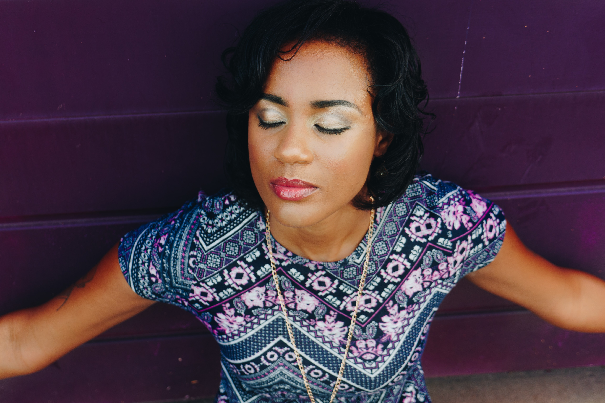
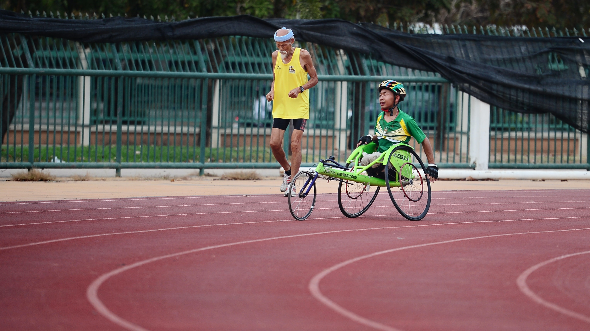
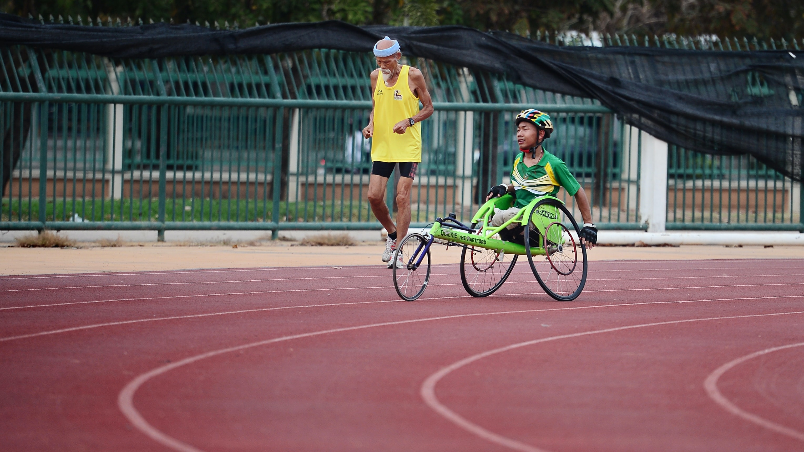
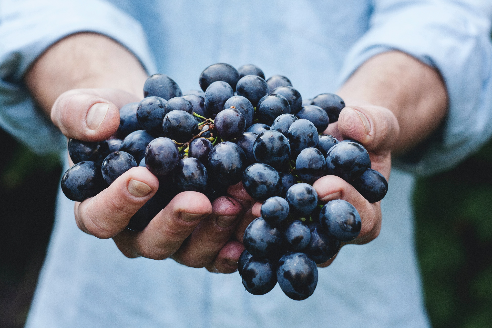
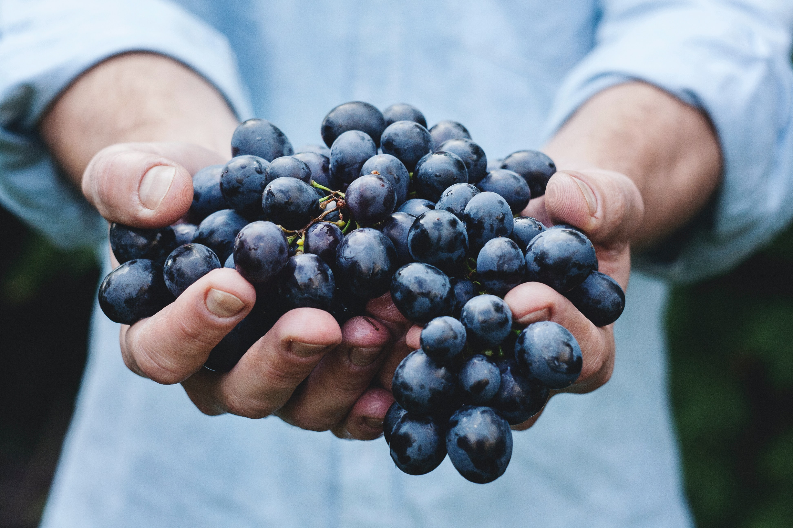
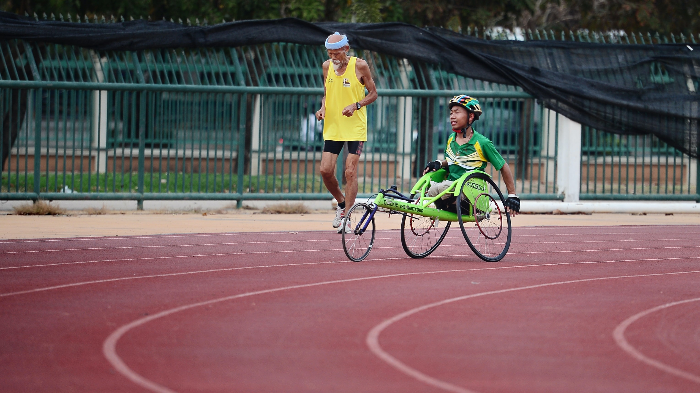
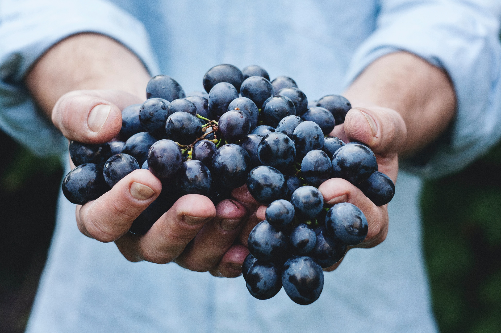

Cooking is a lifestyle. Building a solid lifestyle takes more than excellence in the kitchen. You should be dedicated finding that same level of healthy goodness in the way you take care of yourself. Are you getting enough sleep, are you walking enough, are the foods you put in your body giving you energy? If not, it may be time to take a moment to evaluate whether your current lifestyle is helping you work towards your ideal lifestyle.
In this section, we link to article, stories, and blogs related to health and wellness. If you have a story you’d like to see on our page, submit it in the contact section of the About me page.



 


 



